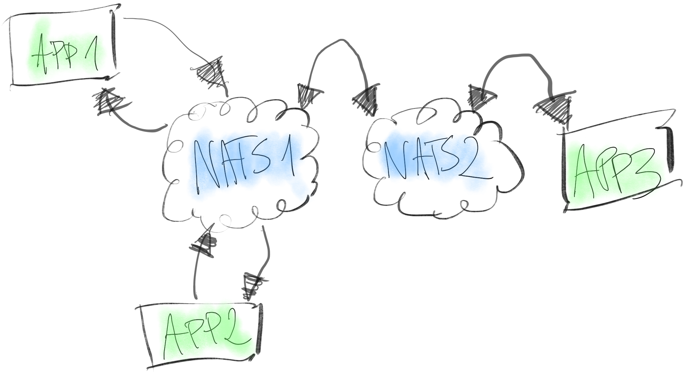

Going

Piotr Ciruk
NATS.io
- messaging system
- written in Ruby, re-written in Go
- at-most-once delivery
- Apache License 2.0
NATS.io
- Core NATS
- Jetstream
Core NATS
- Publish-Subscribe
- Request-Reply
- Queue Groups
Jetstream
- at-least-once-delivery
- built on top of Core NATS
Architecture
Single node
Multiple nodes
Protocol
Text based
Reduced message set
Space-delimited fields
Messages terminated with CR-LF
Protocol
Client -> Server
| PUB | HPUB | SUB | UNSUB || CONNECT | PING | PONG | Protocol
Server -> Client
| MSG | HMSG | +OK | -ERR || INFO | PING | PONG | Performance
Benchmarks
Production
6M+ events (not messages)
200k subscriptions
Production
| Min [msg/s] | Bursts [msg/s] | |
|---|---|---|
| In | 1k | 2-6k |
| Out | 11k | 30-50k |
Production
| Latency | Percentile |
|---|---|
| <100ms | 99.997 |
| <50ms | 99.93 |
| <10ms | 99.78 |